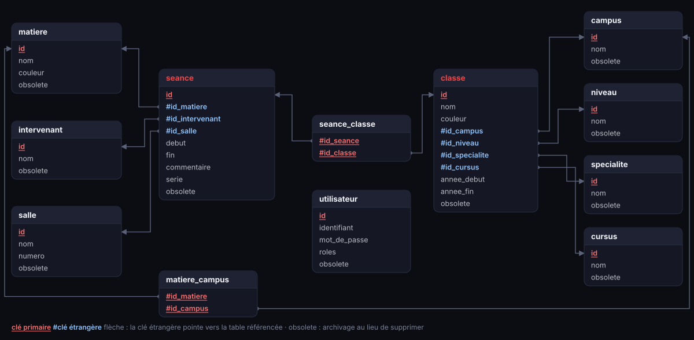

Projet de deuxième année de BTS, en équipe de cinq
Pla'Net
Application web de planning des cours de MediaSchool Rouen, réalisée à cinq en quatre jours. Le cœur du projet, c'est la planification et la base de données : nous y avons consacré deux jours et demi sur quatre.

En bref
Pla'Net sert à construire et à consulter le planning des cours de l'école. Nous l'avons réalisé à cinq, en quatre jours, du 15 au 18 septembre 2026.
Notre choix : deux jours et demi de planification et de base de données avant d'écrire du code. L'application a ensuite été produite en un jour et demi, en grande partie générée avec l'IA. C'est la conception qui fait la valeur de ce projet.
Le contexte et le besoin
Un outil web où les administrateurs saisissent le planning (classes, intervenants, salles, matières, cours communs à plusieurs classes) et où tout le monde le consulte. Une règle posée dès le départ : ne jamais rien supprimer définitivement, pour garder l'historique.
La planification : 45 cartes sur Trello
Tout le besoin a été découpé en cartes, rangées en six lots (infrastructure, connexion, référentiels, cours, calendrier, archivage).
- Une priorité de P1 à P4 et une estimation sur chaque carte.
- Un critère « Fait quand » vérifiable, par exemple : « une séance avec 3 classes apparaît dans les 3 calendriers ».
- Une carte DÉCISION qui bloquait le code tant que quatre questions de conception n'étaient pas tranchées.
La base de données
Le schéma a été construit au tableau en équipe, puis écrit en SQL. Il compte aujourd'hui 12 tables.

- Jamais de suppression : chaque table a une colonne
obsolete, ce qui permet d'archiver sans casser les séances passées. - Une table de liaison pour les cours communs à plusieurs classes, au lieu de copier la séance.
- Des contrôles dans la base : clés étrangères, fin après le début, index sur les dates.
Le code, généré en grande partie par l'IA
Le code a été généré en grande partie par l'IA, à partir du schéma et des cartes Trello. Je ne le présente pas comme écrit par moi ligne par ligne. Comme les tables étaient figées et que chaque carte avait son critère « Fait quand », nous pouvions vérifier le résultat carte par carte.
Prévu et réalisé
34 cartes sur 45 sont réalisées, soit environ 75 % de la charge estimée.
- Il manque la sauvegarde, pourtant prioritaire : c'est le prochain chantier.
- Les référentiels simples (écoles, niveaux, salles) n'ont pas d'écran et sont remplis par script SQL.
- Nos estimations supposaient un développement à la main : avec l'IA, il faut suivre l'avancement en cartes terminées plutôt qu'en jours.
Les difficultés
- Import dans phpMyAdmin : le script a été réécrit, car phpMyAdmin perd la base sélectionnée pendant l'import.
- Faire évoluer la base en production : des migrations SQL rejouables, qui archivent au lieu de supprimer.
Le résultat
Pla'Net est un outil interne à l'école, testable avec le bouton en haut de cette page (des comptes de démonstration sont indiqués sur l'écran de connexion). Il continue d'évoluer au fil de l'année.
Ce que j'en retiens
- La préparation a rendu le code rapide et vérifiable.
- Trancher les questions bloquantes avant de coder évite de refaire la base en cours de route.
- Le code généré par l'IA va vite, mais il faut un cahier des charges précis pour le contrôler.
Compétences mobilisées
- Planifier un projet et suivre les écarts entre prévu et réalisé.
- Concevoir une base de données relationnelle et l'écrire en SQL.
- Gérer les droits d'accès selon le rôle de l'utilisateur.
Une question sur ce projet ?
Je serai ravi d'en parler plus en détail lors d'un échange.